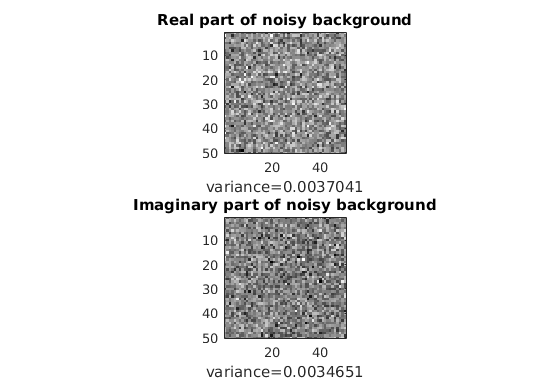
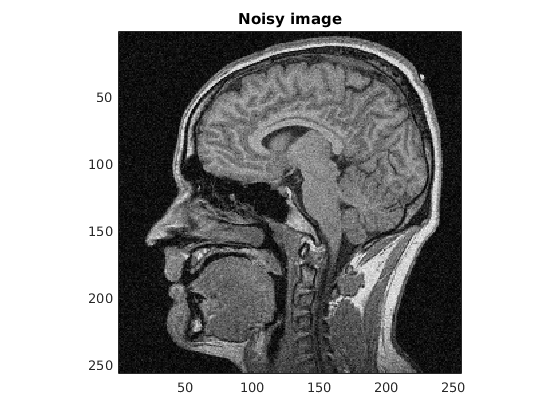
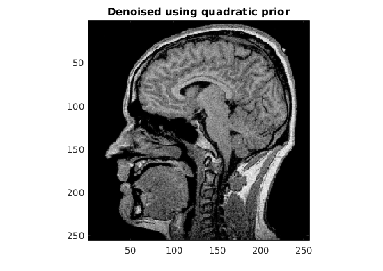
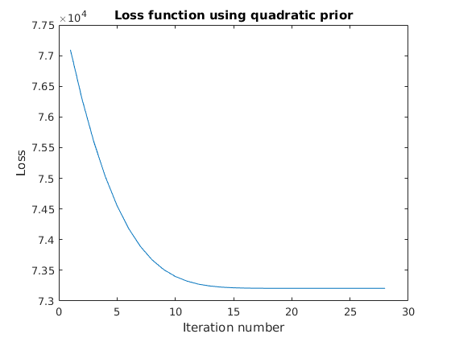
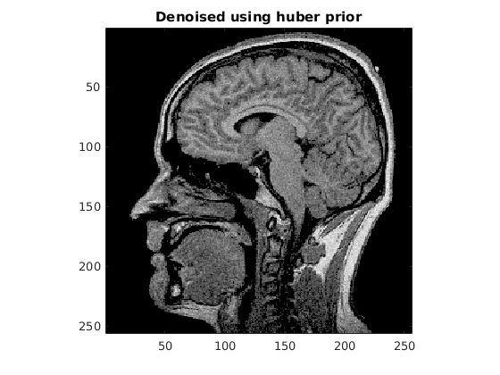
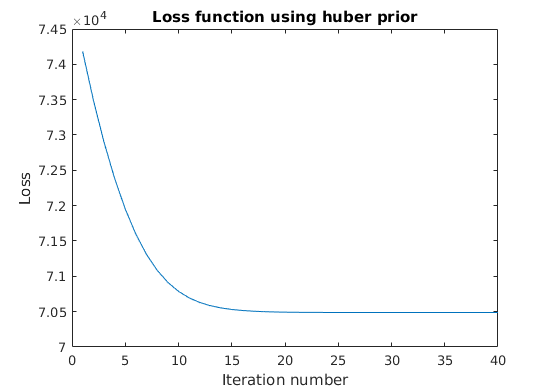
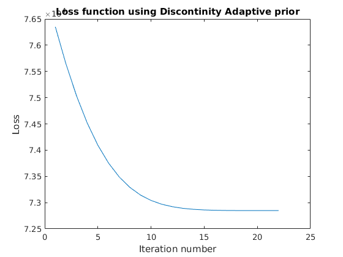

Contents
tic;
load('../data/assignmentImageDenoisingBrainNoisy.mat');
myNumOfColors = 200;
myColorScale = [ [0:1/(myNumOfColors-1):1]' , [0:1/(myNumOfColors-1):1]', [0:1/(myNumOfColors-1):1]' ];
K = 50;
Bg = imageNoisy(1:K, 1:K);
realBg = real(Bg);
imagBg = imag(Bg);
varReal = var(realBg(:));
varImag = var(imagBg(:));
imVar = mean([varReal, varImag]);
figure;
subplot(2,1,1);
imagesc(realBg);
colormap(myColorScale);
daspect ([1 1 1]);
axis tight;
title('Real part of noisy background');
xlabel(['variance=', num2str(varReal)]);
subplot(2,1,2);
imagesc(imagBg);
colormap(myColorScale);
daspect ([1 1 1]);
axis tight;
title('Imaginary part of noisy background');
xlabel(['variance=', num2str(varImag)]);
nImage = abs(imageNoisy);
figure;
imagesc(nImage);
colormap(myColorScale);
daspect ([1 1 1]);
axis tight;
title('Noisy image');
 
Quadratic loss
alpha = 0.086;
gamma = 0.01;
[image_quad, loss_quad] = denoise(imageNoisy, alpha, imVar, 'q', gamma);
figure;
imagesc(image_quad);
colormap(myColorScale);
daspect ([1 1 1]);
axis tight;
title('Denoised using quadratic prior');
figure;
plot(loss_quad);
title('Loss function using quadratic prior');
xlabel('Iteration number');
ylabel('Loss');
 
Huber loss
alpha = 0.084;
gamma = 0.072;
[image_huber, loss_huber] = denoise(imageNoisy, alpha, imVar, 'h', gamma);
figure;
imagesc(image_huber);
colormap(myColorScale);
daspect ([1 1 1]);
axis tight;
title('Denoised using huber prior');
figure;
plot(loss_huber);
title('Loss function using huber prior');
xlabel('Iteration number');
ylabel('Loss');
 
discontinuity adaptive loss
alpha = 0.09;
gamma = 0.8;
[image_adap, loss_adap] = denoise(imageNoisy, alpha, imVar, 'd', gamma);
figure;
imagesc(image_adap);
colormap(myColorScale);
daspect ([1 1 1]);
axis tight;
title('Denoised using discontinuity adaptive prior');
figure;
plot(loss_adap);
title('Loss function using Discontinity Adaptive prior');
xlabel('Iteration number');
ylabel('Loss');
fprintf('Minimum loss with quadratic prior: %f\n', loss_quad(size(loss_quad, 1)));
fprintf('Minimum loss with Huber prior: %f\n', loss_huber(size(loss_huber, 1)));
fprintf('Minimum loss with discontinuity adaptive prior: %f\n', loss_adap(size(loss_adap, 1)));
toc;
Minimum loss with quadratic prior: 73207.083730
Minimum loss with Huber prior: 70488.608492
Minimum loss with discontinuity adaptive prior: 72848.384514
Elapsed time is 6.029893 seconds.
